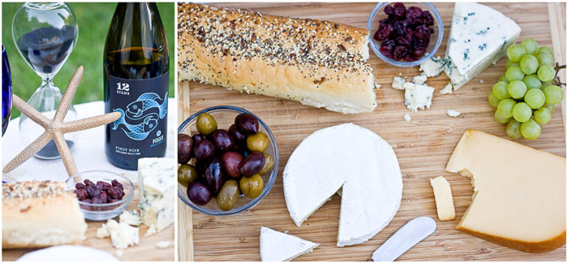

ommercial photography is popular these days. But it’s not all about large teams creating images in a studio for big ad campaigns. This article will help you understand what commercial photography is and how to get started.
Commercial photography includes a wide range of photography niches. It’s the creation of high-quality images for commercial purposes.
Let’s break down the common types of commercial photography. Then we will get into all the commercial photography tips you need to know to succeed in this industry!
This is what most people think of when you say “commercial photography”. This type of photography can be in a studio or outdoors. It can involve paid models who are modeling a product.
For fashion photographers, each shoot is unique. Knowing how to pose people and give direction is a huge skill. This is very useful for this type of work.
This is another large category. You can take product photos in a studio or outdoors. Photographers mostly shoot in a studio, so they have a solid backdrop for online use.
Doing this type of work will require that you get familiar with working in a studio. This includes controlling studio lights to get the desired effects on your products.
Yes, this category of commercial photography may remind you of people taking photos of their food for Instagram. But it can be a great niche to do as a professional!
You’ll want to work with a food stylist to get the food looking its best for the camera. This type of work also involves editorial restaurant shots. This means being quick to set up your equipment in a restaurant during a set time frame. At the same time, you need to create lighting that makes the food look enticing yet natural.

This means taking photos of people in their work environment.
For example, you may go to a plant nursery and take photos of some of the employees tending to the plants. You’re showing how the nursery maintains a high level of care for their products.
You’ll be working on-the-go most of the time. And you may need special permissions for some sites.
The most common type of commercial photography out there is a headshot. These photos promote the person’s products or services.
Headshot sessions are quick and fun. But they require a connection with your subject and giving them direction on posing in a limited time frame.
This category involves photographing a space for commercial purposes. This can be to showcase the architect’s design or to show the appeal of a retail store.
As with food photography, you’re often working with tight time frames. And you’re shooting around the flow of customers.
With spaces, including a few well-placed people in the shot often helps to give the photo life and context.